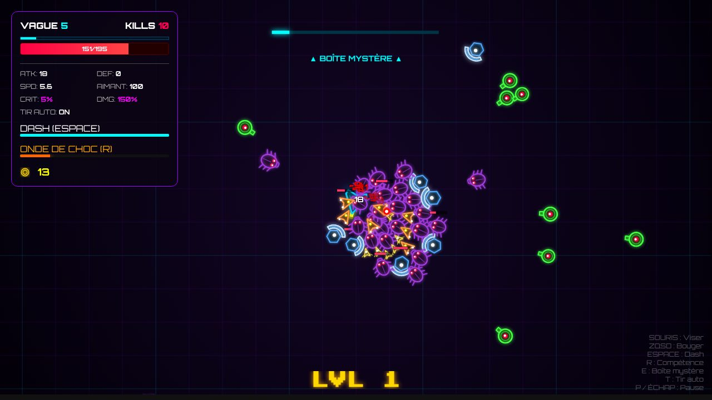
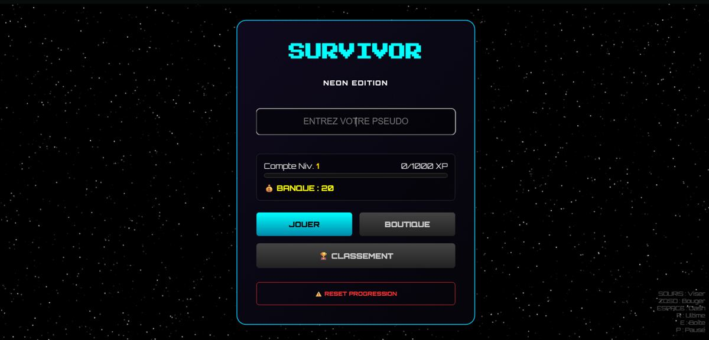
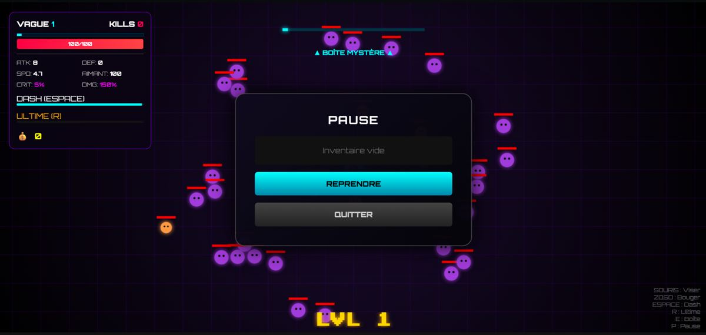
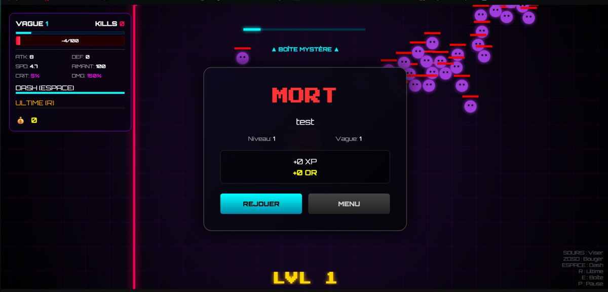
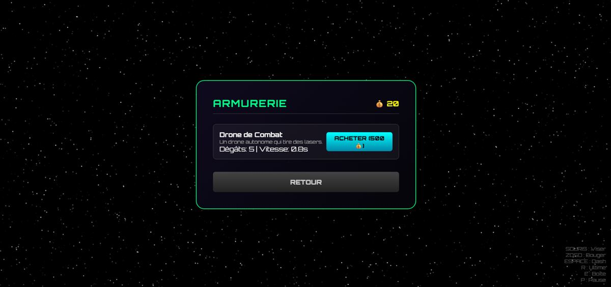
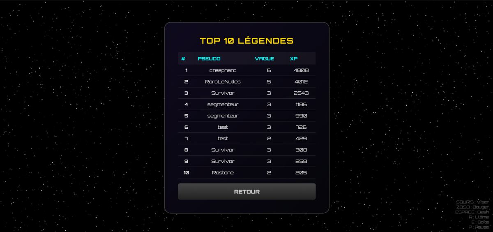

Projet phare · jouable en ligne
Last Pulse
Jeu de survie 2D en vagues façon Vampire Survivors, style néon, écrit en JavaScript pur sur <canvas>, sans aucune dépendance. Installable (PWA), jouable au clavier, à la souris et sur mobile.
- 5 biomes, 30 vagues, 16 types d'ennemis et des boss à phases jusqu'au Cœur du Pulse, puis le mode infini Endless Pulse
- Duel 1 contre 1 en écran scindé ou en ligne (WebRTC), classement ELO, amis et défis
- Progression : équipement à raretés, talents, quêtes, saison mensuelle avec passe gratuit
- Back-end Supabase : comptes, sauvegarde, classements mondiaux, notifications push, statistiques
- Qualité : typage JSDoc vérifié par TypeScript, tests Playwright PC et mobile, CI/CD GitHub Actions




